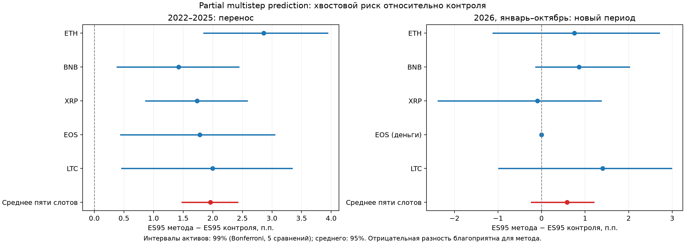

Gromov–Baranov, возмущённые траектории с усреднением и rgdbscan. Торговая надстройка на Backtesting.py.
Январь–октябрь 2026: средняя разность ES95 +0.584 п.п.; 95% интервал [-0.234; +1.198] п.п. Исторически выбрано пять пар; активных в этом периоде — 4. EOS — закрытый слот с деньгами.
Исходное исследование BTC и интерактивный бэк-тест · Все метрики CSV · Основное сравнение CSV · Протокол · Хеши входов и кода · Проверка исполнения и бухгалтерии
Состав определён до расчёта стратегий: пять не-BTC пар USDT с наибольшим оборотом в котируемой валюте за 2019 год. Требовались торги с начала 2019 года, все 12 месячных архивов и не менее 99% реальных часов. Stablecoins, фиатные и leveraged-токены исключались по заранее заданному правилу. Список восстановлен по историческим архивам Binance; сохранённость абсолютно всех прежних тикеров доказать нельзя. Все кандидаты, исключения, обороты и контрольные суммы.
Параметры перенесены из BTC trial 26 без подбора на новых активах. Для каждого актива мотивы переобучаются поквартально только на предыдущих 10 000 часах. 2021 год нужен для истории сигналов контрольной стратегии, а не для нового выбора параметров. Цена нормируется по train, горизонт — 24 часа. Стратегия long/cash, без плеча, вход на 95% капитала при принятом прогнозе роста более 0,3%; издержки — 15 bps с каждой стороны. Комиссионная модель одинакова, а фактическая ликвидность и проскальзывание разных активов могут различаться.
Результаты BTC за 2022–2025 уже были известны при постановке расширения. Поэтому перенос на тот же период показан как дополнительная историческая проверка. Основная проверка — заранее закрытый от исследования период январь–октябрь 2026; это исторический holdout, а не сбор будущих данных. Оба периода начинают с отдельных 100 000 USDT. Ни один результат не меняет рынки, параметры, пороги или даты.
| period | symbol | retired_slot | inactive_pair | method_es95 | control_es95 | es_difference | method_return | control_return | method_exposure | control_exposure |
|---|---|---|---|---|---|---|---|---|---|---|
| historical | ETHUSDT | False | False | 6.41% | 3.55% | +2.860 п.п. | -78.49% | 20.39% | 35.48% | 33.85% |
| historical | BNBUSDT | False | False | 4.56% | 3.13% | +1.425 п.п. | 31.74% | 95.64% | 39.56% | 40.16% |
| historical | XRPUSDT | False | False | 5.77% | 4.04% | +1.736 п.п. | -37.39% | 54.00% | 39.30% | 38.86% |
| historical | EOSUSDT | False | False | 7.41% | 5.63% | +1.782 п.п. | -86.04% | -9.80% | 41.48% | 41.98% |
| historical | LTCUSDT | False | False | 6.97% | 4.97% | +1.997 п.п. | -60.82% | -20.04% | 42.99% | 42.70% |
| holdout | ETHUSDT | False | False | 4.77% | 4.01% | +0.756 п.п. | 9.63% | -9.49% | 41.56% | 46.41% |
| holdout | BNBUSDT | False | False | 3.31% | 2.45% | +0.859 п.п. | 3.76% | 9.13% | 56.15% | 55.81% |
| holdout | XRPUSDT | False | False | 3.83% | 3.93% | -0.098 п.п. | 59.59% | -19.81% | 59.87% | 60.80% |
| holdout | EOSUSDT | True | True | 0.00% | 0.00% | +0.000 п.п. | 0.00% | 0.00% | 0.00% | 0.00% |
| holdout | LTCUSDT | False | False | 3.88% | 2.48% | +1.405 п.п. | -23.45% | -17.89% | 26.20% | 27.69% |
ES95 — средняя потеря в худших ceil(5% × n) днях, ограниченная снизу нулём. Контроль ежедневно поддерживает долю актива по среднему предыдущих 90 targets метода. Показываются фактические доли: они могут различаться. Средняя разность по пяти слотам — характеристика качества переноса, а не риск инвестиционного портфеля. Нулевая активность не считается успехом распознавания риска.

На XRP в 2026 доходность метода +59.59%, контроля -19.81%. Однако разность ES95 -0.098 п.п. имеет скорректированный интервал [-2.373; +1.363] п.п. Эта положительная строка по доходности не меняет основной вывод панели. Выбор XRP на основании этого результата был бы выбором рынка по test и потребовал бы новой проверки на будущих данных.
На рисунке интервалы отдельных активов — 99% (поправка Bonferroni на пять сравнений), общего среднего — 95%. Это приближённые bootstrap-интервалы. 10 000 повторов используют одинаковые календарные блоки для всех активов и обеих стратегий, сохраняя их корреляцию. Основной блок — 14 дней, 7 и 28 дней проверяют чувствительность. Криптоактивы не считаются независимыми наблюдениями; лучший рынок не выбирается для заявления о превосходстве. В историческом периоде 1461 календарный день, в holdout — 304.
| period | block_days | mean_difference | lower | upper |
|---|---|---|---|---|
| historical | 7 | +1.960 п.п. | +1.515 п.п. | +2.398 п.п. |
| historical | 14 | +1.960 п.п. | +1.485 п.п. | +2.421 п.п. |
| historical | 28 | +1.960 п.п. | +1.451 п.п. | +2.460 п.п. |
| holdout | 7 | +0.584 п.п. | -0.267 п.п. | +1.188 п.п. |
| holdout | 14 | +0.584 п.п. | -0.234 п.п. | +1.198 п.п. |
| holdout | 28 | +0.584 п.п. | -0.135 п.п. | +1.186 п.п. |
EOS вошёл в список по обороту 2019 года и остался в нём. Уведомление биржи датировано 14 мая 2025; поскольку часовой пояс публикации не подписан, правило доступности добавляет 48 часов после начала этой даты UTC. Все стратегии переводят target в ноль после закрытия бара 15 мая 23:00, исполнение — 16 мая 01:00, до прекращения торгов 26 мая 03:00 UTC. После этого новые мотивы не строятся, доходность денег равна нулю. EOS не заменён на следующий по обороту актив и не сшит с Vaulta/A. Его вклад в 2026 равен нулю, знаменатель среднего остаётся пять; это не пятый активный рынок с успешным прогнозом.
| symbol | strategy | total_return | max_drawdown | daily_volatility | es95 | mean_exposure | entries |
|---|---|---|---|---|---|---|---|
| ETHUSDT | Деньги | 0.00% | 0.00% | 0.00% | 0.00% | 0.00% | 0 |
| ETHUSDT | Buy & hold | -20.04% | 72.93% | 63.86% | 7.63% | 91.66% | 1 |
| ETHUSDT | SMA 50/200 | -32.24% | 62.39% | 42.20% | 5.63% | 47.93% | 5 |
| ETHUSDT | Momentum 90 | 36.86% | 45.35% | 43.11% | 5.49% | 48.69% | 25 |
| ETHUSDT | Donchian 20/10 | -21.69% | 48.19% | 38.24% | 5.11% | 32.82% | 23 |
| ETHUSDT | RSI 14 | -47.71% | 62.42% | 34.22% | 4.88% | 17.44% | 8 |
| ETHUSDT | Vol-target 20% | 31.00% | 30.30% | 22.27% | 2.59% | 33.72% | 812 |
| ETHUSDT | Partial multistep prediction · TPE | -78.49% | 86.39% | 43.30% | 6.41% | 35.48% | 145 |
| ETHUSDT | Контроль по прошлым 90 дням | 20.39% | 42.72% | 28.59% | 3.55% | 33.85% | 749 |
| BNBUSDT | Деньги | 0.00% | 0.00% | 0.00% | 0.00% | 0.00% | 0 |
| BNBUSDT | Buy & hold | 60.81% | 61.43% | 54.09% | 6.65% | 93.31% | 1 |
| BNBUSDT | SMA 50/200 | 33.53% | 57.03% | 43.88% | 5.55% | 53.15% | 6 |
| BNBUSDT | Momentum 90 | 44.42% | 45.86% | 39.15% | 4.89% | 53.22% | 42 |
| BNBUSDT | Donchian 20/10 | 69.78% | 40.39% | 37.10% | 4.66% | 41.43% | 19 |
| BNBUSDT | RSI 14 | 48.84% | 42.14% | 24.60% | 2.91% | 12.45% | 10 |
| BNBUSDT | Vol-target 20% | 73.45% | 33.85% | 22.55% | 2.67% | 41.71% | 790 |
| BNBUSDT | Partial multistep prediction · TPE | 31.74% | 48.94% | 33.64% | 4.56% | 39.56% | 141 |
| BNBUSDT | Контроль по прошлым 90 дням | 95.64% | 33.36% | 26.05% | 3.13% | 40.16% | 711 |
| XRPUSDT | Деньги | 0.00% | 0.00% | 0.00% | 0.00% | 0.00% | 0 |
| XRPUSDT | Buy & hold | 111.10% | 64.51% | 81.52% | 8.11% | 93.49% | 1 |
| XRPUSDT | SMA 50/200 | 28.70% | 67.22% | 66.56% | 6.94% | 48.92% | 6 |
| XRPUSDT | Momentum 90 | -56.33% | 83.71% | 57.14% | 7.05% | 49.77% | 43 |
| XRPUSDT | Donchian 20/10 | 90.80% | 51.20% | 51.46% | 6.27% | 31.79% | 16 |
| XRPUSDT | RSI 14 | 5.39% | 52.21% | 25.50% | 3.24% | 11.95% | 8 |
| XRPUSDT | Vol-target 20% | 103.89% | 25.66% | 29.60% | 2.58% | 31.52% | 838 |
| XRPUSDT | Partial multistep prediction · TPE | -37.39% | 73.84% | 47.75% | 5.77% | 39.30% | 146 |
| XRPUSDT | Контроль по прошлым 90 дням | 54.00% | 51.87% | 34.70% | 4.04% | 38.86% | 754 |
| EOSUSDT | Деньги | 0.00% | 0.00% | 0.00% | 0.00% | 0.00% | 0 |
| EOSUSDT | Buy & hold | -71.30% | 83.46% | 67.49% | 8.89% | 70.34% | 1 |
| EOSUSDT | SMA 50/200 | -64.19% | 69.62% | 40.64% | 5.75% | 22.23% | 3 |
| EOSUSDT | Momentum 90 | -37.45% | 63.64% | 53.07% | 7.07% | 29.46% | 20 |
| EOSUSDT | Donchian 20/10 | -27.69% | 72.61% | 52.16% | 6.79% | 27.83% | 17 |
| EOSUSDT | RSI 14 | -21.46% | 55.23% | 29.59% | 4.17% | 17.04% | 9 |
| EOSUSDT | Vol-target 20% | -6.26% | 38.11% | 21.05% | 2.65% | 23.94% | 691 |
| EOSUSDT | Partial multistep prediction · TPE | -86.04% | 88.28% | 49.51% | 7.41% | 41.48% | 95 |
| EOSUSDT | Контроль по прошлым 90 дням | -9.80% | 58.70% | 42.79% | 5.63% | 41.98% | 633 |
| LTCUSDT | Деньги | 0.00% | 0.00% | 0.00% | 0.00% | 0.00% | 0 |
| LTCUSDT | Buy & hold | -46.56% | 69.85% | 70.63% | 8.66% | 90.95% | 1 |
| LTCUSDT | SMA 50/200 | -59.65% | 71.48% | 51.31% | 7.33% | 41.65% | 6 |
| LTCUSDT | Momentum 90 | -14.22% | 60.53% | 51.26% | 6.93% | 42.14% | 32 |
| LTCUSDT | Donchian 20/10 | -77.35% | 81.13% | 47.36% | 6.78% | 33.75% | 21 |
| LTCUSDT | RSI 14 | 50.52% | 49.45% | 28.20% | 3.29% | 10.80% | 9 |
| LTCUSDT | Vol-target 20% | 16.29% | 25.91% | 22.10% | 2.70% | 30.24% | 808 |
| LTCUSDT | Partial multistep prediction · TPE | -60.82% | 65.03% | 49.99% | 6.97% | 42.99% | 172 |
| LTCUSDT | Контроль по прошлым 90 дням | -20.04% | 60.73% | 38.98% | 4.97% | 42.70% | 721 |
| symbol | strategy | total_return | max_drawdown | daily_volatility | es95 | mean_exposure | entries |
|---|---|---|---|---|---|---|---|
| ETHUSDT | Деньги | 0.00% | 0.00% | 0.00% | 0.00% | 0.00% | 0 |
| ETHUSDT | Buy & hold | -23.96% | 52.54% | 56.10% | 6.33% | 92.86% | 1 |
| ETHUSDT | SMA 50/200 | -8.60% | 20.21% | 17.18% | 2.53% | 19.05% | 1 |
| ETHUSDT | Momentum 90 | -19.76% | 23.15% | 23.38% | 3.39% | 31.62% | 5 |
| ETHUSDT | Donchian 20/10 | -26.29% | 30.19% | 28.32% | 3.77% | 37.83% | 6 |
| ETHUSDT | RSI 14 | -17.85% | 28.20% | 35.87% | 4.94% | 19.52% | 2 |
| ETHUSDT | Vol-target 20% | -13.04% | 30.36% | 24.38% | 2.79% | 39.04% | 182 |
| ETHUSDT | Partial multistep prediction · TPE | 9.63% | 38.48% | 41.93% | 4.77% | 41.56% | 38 |
| ETHUSDT | Контроль по прошлым 90 дням | -9.49% | 33.51% | 33.40% | 4.01% | 46.41% | 145 |
| BNBUSDT | Деньги | 0.00% | 0.00% | 0.00% | 0.00% | 0.00% | 0 |
| BNBUSDT | Buy & hold | -17.94% | 41.28% | 41.36% | 5.16% | 93.23% | 1 |
| BNBUSDT | SMA 50/200 | -2.69% | 12.87% | 16.61% | 2.34% | 18.13% | 1 |
| BNBUSDT | Momentum 90 | 4.49% | 12.89% | 24.19% | 2.90% | 29.74% | 4 |
| BNBUSDT | Donchian 20/10 | 11.71% | 18.39% | 27.12% | 2.97% | 47.36% | 4 |
| BNBUSDT | RSI 14 | -15.66% | 24.75% | 22.24% | 2.91% | 9.88% | 1 |
| BNBUSDT | Vol-target 20% | 2.46% | 23.05% | 24.38% | 2.83% | 55.30% | 169 |
| BNBUSDT | Partial multistep prediction · TPE | 3.76% | 16.48% | 28.33% | 3.31% | 56.15% | 21 |
| BNBUSDT | Контроль по прошлым 90 дням | 9.13% | 15.81% | 22.92% | 2.45% | 55.81% | 160 |
| XRPUSDT | Деньги | 0.00% | 0.00% | 0.00% | 0.00% | 0.00% | 0 |
| XRPUSDT | Buy & hold | -31.90% | 56.27% | 60.32% | 5.99% | 92.79% | 1 |
| XRPUSDT | SMA 50/200 | -20.23% | 24.85% | 14.99% | 2.51% | 12.08% | 1 |
| XRPUSDT | Momentum 90 | -18.21% | 26.01% | 27.63% | 4.03% | 24.30% | 4 |
| XRPUSDT | Donchian 20/10 | -21.56% | 36.09% | 35.84% | 3.99% | 27.57% | 6 |
| XRPUSDT | RSI 14 | -12.23% | 28.90% | 36.95% | 4.09% | 17.37% | 2 |
| XRPUSDT | Vol-target 20% | -10.76% | 28.94% | 23.98% | 2.44% | 38.94% | 187 |
| XRPUSDT | Partial multistep prediction · TPE | 59.59% | 23.72% | 44.27% | 3.83% | 59.87% | 18 |
| XRPUSDT | Контроль по прошлым 90 дням | -19.81% | 40.03% | 40.60% | 3.93% | 60.80% | 164 |
| EOSUSDT | Деньги | 0.00% | 0.00% | 0.00% | 0.00% | 0.00% | 0 |
| EOSUSDT | Buy & hold | 0.00% | 0.00% | 0.00% | 0.00% | 0.00% | 0 |
| EOSUSDT | SMA 50/200 | 0.00% | 0.00% | 0.00% | 0.00% | 0.00% | 0 |
| EOSUSDT | Momentum 90 | 0.00% | 0.00% | 0.00% | 0.00% | 0.00% | 0 |
| EOSUSDT | Donchian 20/10 | 0.00% | 0.00% | 0.00% | 0.00% | 0.00% | 0 |
| EOSUSDT | RSI 14 | 0.00% | 0.00% | 0.00% | 0.00% | 0.00% | 0 |
| EOSUSDT | Vol-target 20% | 0.00% | 0.00% | 0.00% | 0.00% | 0.00% | 0 |
| EOSUSDT | Partial multistep prediction · TPE | 0.00% | 0.00% | 0.00% | 0.00% | 0.00% | 0 |
| EOSUSDT | Контроль по прошлым 90 дням | 0.00% | 0.00% | 0.00% | 0.00% | 0.00% | 0 |
| LTCUSDT | Деньги | 0.00% | 0.00% | 0.00% | 0.00% | 0.00% | 0 |
| LTCUSDT | Buy & hold | -28.66% | 50.66% | 49.14% | 5.51% | 92.41% | 1 |
| LTCUSDT | SMA 50/200 | -9.78% | 25.71% | 23.10% | 2.79% | 11.86% | 1 |
| LTCUSDT | Momentum 90 | 5.60% | 25.95% | 29.79% | 3.36% | 24.52% | 4 |
| LTCUSDT | Donchian 20/10 | 11.65% | 16.99% | 30.93% | 2.99% | 31.07% | 4 |
| LTCUSDT | RSI 14 | -20.80% | 31.29% | 29.25% | 4.07% | 22.96% | 2 |
| LTCUSDT | Vol-target 20% | -10.01% | 28.54% | 22.71% | 2.57% | 44.21% | 177 |
| LTCUSDT | Partial multistep prediction · TPE | -23.45% | 34.80% | 25.61% | 3.88% | 26.20% | 13 |
| LTCUSDT | Контроль по прошлым 90 дням | -17.89% | 25.01% | 19.31% | 2.48% | 27.69% | 153 |
| symbol | period | retired_slot | active_origins | accepted |
|---|---|---|---|---|
| ETHUSDT | historical | False | 1461 | 1273 |
| ETHUSDT | holdout | False | 304 | 300 |
| BNBUSDT | historical | False | 1461 | 1309 |
| BNBUSDT | holdout | False | 304 | 301 |
| XRPUSDT | historical | False | 1461 | 1326 |
| XRPUSDT | holdout | False | 304 | 278 |
| EOSUSDT | historical | False | 1230 | 1118 |
| EOSUSDT | holdout | True | 0 | 0 |
| LTCUSDT | historical | False | 1461 | 1359 |
| LTCUSDT | holdout | False | 304 | 216 |
| symbol | observed_hours | quote_volume_2019 |
|---|---|---|
| ETHUSDT | 8731 | 26,669,721,206 |
| BNBUSDT | 8731 | 17,480,959,096 |
| XRPUSDT | 8731 | 11,393,685,554 |
| EOSUSDT | 8731 | 10,809,334,544 |
| LTCUSDT | 8731 | 9,378,814,060 |
| TRXUSDT | 8731 | 6,320,399,392 |
| ADAUSDT | 8731 | 3,161,750,791 |
| NEOUSDT | 8731 | 2,224,443,791 |
| XLMUSDT | 8731 | 1,670,079,593 |
| ETCUSDT | 8730 | 1,615,000,374 |
| ONTUSDT | 8731 | 1,566,515,294 |
| VETUSDT | 8731 | 1,331,165,791 |
| ICXUSDT | 8731 | 719,632,801 |
| QTUMUSDT | 8730 | 679,983,412 |
| IOTAUSDT | 8731 | 625,907,726 |
| NULSUSDT | 8730 | 152,732,376 |
Готовые universe и selection уже сохранены. Восстановление данных и расчётов:
uv sync --locked --extra trading uv run --extra trading python -m adis.trading.transfer_data uv run --extra trading python -m adis.trading.transfer uv run --extra trading python -m adis.trading.audit --transfer uv run --extra trading python -m adis.trading.transfer_report
Проверяется исполнение только на реальных Open, комиссии, PnL и конечный капитал; дневные доходности, ES и просадки пересчитаны независимо. Даты обучения и код зафиксированы хешами. Сохранены результаты всех заранее заданных рынков и стратегий, включая отрицательные. Записи частичных закрытий позиций в журнале не считаются независимыми статистическими наблюдениями. Новая оптимизация после просмотра этого отчёта потребует другого внешнего теста.